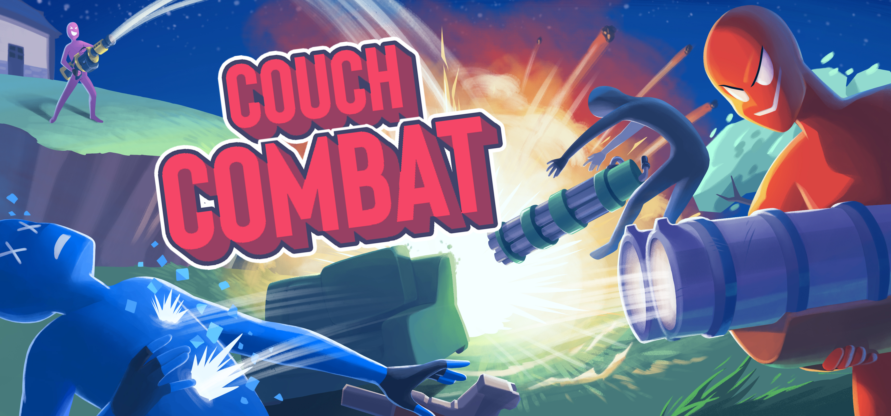

Main Projects
Couch Combat

Steam Page
Devlog Playlist
Couch Combat is a split-screen first-person shooter game I developed over the course of 2 years and commercially released it on Steam. It has sold over 1,000 copies. It was developed in Unity with C#, and I handled all the 3D modeling, programming, and game design.
As my first big project, I learned a lot about project organization and planning. Over time, I had to refactor old code as I gained more experience. My main focus was to create a solid game with fun core gameplay and plenty of content.
Notable Features:
- Local multiplayer supporting up to 4 players using keyboard and controllers
- A unique, roguelike-inspired modifier system allowing chaotic combinations of effects like low-gravity, dual wielding weapons, and more
MythoMania
Demo
Steam Page
Devlog Playlist
MythoMania is an action roguelike I am currently developing in my spare time. Built in Unity with C#, I am collaborating with an artist. In the game, you stack powerful items, unlock new skills, and form tenuous alliances with gods. It is heavily inspired by Risk of Rain 2 and Hollow Knight.
Notable Features:
- A game director that constructs enemy waves based on a point budget, upgrading enemies into stronger variants
- A versatile item system inspired by Risk of Rain 2 where items can have any of effects (stat modifiers, creating objects, status effects.) The system supports stacking items with several modes of scaling (linear, exponential, reciprocal) and has been used to make over 40 unique items already.
- An enemy design system which allows me to quickly create new enemies with a variety of attack types (projectile, movement, melee attacks, custom events) which can be combined together to create more complicated enemy attacks.
- An in-development negotiation mechanic where you can trade items with god npcs in the game in exchange for various upgrades and abilities. The gods prefer some items over others, and may dislike or like you more for having an alliance with another god.
Game / Mechanic Recreations
The Legend of Zelda: Breath Of The Wild
Demo
I recreated the four runes from *The Legend of Zelda: Breath of the Wild* in Unity, along with the game's glider, sword, and a simple water mechanic. Later, I added a time rewinding mechanic inspired by an early *Tears of the Kingdom* trailer.
Major Features:
- Accurate recreations of the Magnesis, Remote Bomb, Stasis, and Cryonis runes with visual effects
- A time rewinding mechanic that stores object positions and rotations and smoothly rewinds them back in time, affecting other physics objects
Minecraft
Demo
A simple recreation of Minecraft’s core mechanics in Unity with added explosions.
Major Features:
- Procedural world generation using Perlin noise
- Breaking and building mechanics for all block types
- Explosion mechanic with realistic visual effects that destroys blocks in an area
- Voxel rendering with face culling for performance optimization
Attack On Titan ODM Gear Mechanic
Demo
A recreation of the omni-directional movement (ODM) gear from *Attack on Titan*.
Major Features:
- Movement system imitating ODM gear, easy to pick up but with a high skill ceiling
- A boss fight against a large titan with procedural attack animations
- A grappling system that auto-adjusts attachment points for smoother movement
Game Jams / Hackathons
- Made in 48 hours using Pygame and Python
- A 2D platformer where you propel yourself with a massive glock
- Made in 24 hours using Unity
- An educational match-3 game that teaches the essentials of Scrum and simulates a Scrum development cycle
- Made in 48 hours using Unity
- A first-person speed-running parkour game with wall running, double jumping, grapple points, and more
- Made in 48 hours using Godot
- A Hotline Miami-inspired top-down slasher